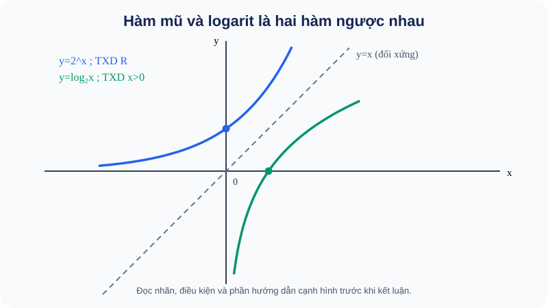
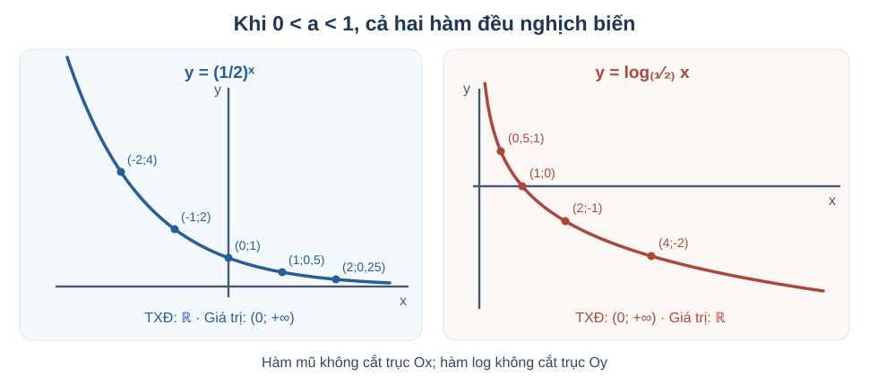

Bài 20. Hàm số mũ và hàm số lôgarit
TOÁN 11 · CHƯƠNG VI · KẾT NỐI TRI THỨC · TẬP HAI
Hàm mũ nhận số mũ làm đầu vào; hàm lôgarit đi ngược để tìm số mũ. Học cách đọc miền xác định, giá trị, biến thiên, tiệm cận và các cặp điểm của hai đồ thị.
1. Khám phá kiến thức
Ở Bài 18, ta tính \(2^3=8\). Ở Bài 19, ta tìm \(x\) khi \(2^x=8\) bằng \(\log_2 8=3\). Nhưng nếu \(x\) thay đổi liên tục thì các giá trị \(2^x\) thay đổi theo quy luật nào? Khi biết kết quả \(y\), cách tìm \(x\) có tạo thành một hàm số không? Hai câu hỏi này đưa ta đến hàm số mũ và hàm số lôgarit. Ta cần cả đồ thị để thấy chiều tăng/giảm, điểm thuộc đồ thị và điều không thể suy ra chỉ bằng một phép tính.
1.1. Hàm số mũ
Hàm số \(y=a^x\) với \(a>0,\ a\ne1\) được gọi là hàm số mũ cơ số \(a\): biến \(x\) nằm ở số mũ. Khác với \(y=x^2\) (biến là cơ số), mọi \(x\in\mathbb R\) đều thay được vào \(a^x\), và kết quả luôn dương. Vì vậy tập xác định là \(\mathbb R\), còn tập giá trị là \((0,+\infty)\): mọi \(y>0\) đều đạt được tại \(x=\log_a y\) theo Bài 19; không có giá trị bằng 0 hoặc âm.
Hãy tính bảng sau rồi quan sát nhịp thay đổi:
| \(x\) | \(-2\) | \(-1\) | \(0\) | \(1\) | \(2\) |
|---|---|---|---|---|---|
| \(2^x\) | \(\frac14\) | \(\frac12\) | \(1\) | \(2\) | \(4\) |
| \((\frac12)^x\) | \(4\) | \(2\) | \(1\) | \(\frac12\) | \(\frac14\) |
Hai đồ thị tương ứng đều đi qua điểm \((0,1)\), nhưng với \(2>1\) thì sang phải giá trị tăng, còn với \(0<\frac12<1\) thì sang phải giá trị giảm. Đây là quy luật tổng quát: \(a>1\) thì hàm đồng biến trên \(\mathbb R\); \(0<a<1\) thì nghịch biến trên \(\mathbb R\). Khi dựng đồ thị, chấm các cặp \((x,a^x)\) trong bảng rồi phác đường cong liên tục theo chiều biến thiên. Tại \(x=1\), giá trị bằng cơ số \(a\), nên đồ thị luôn qua \((1,a)\). Hai hàm đều liên tục trên \(\mathbb R\).

Với \(a>1\), khi \(x\to-\infty\), \(a^x\to0^+\); vì thế đồ thị tiến sát trục hoành \(y=0\) nhưng không chạm. Khi \(x\to+\infty\), giá trị tăng không bị chặn. Với \(0<a<1\), chiều tiến sát trục hoành đổi lại phía bên phải. Một đồ thị không cắt trục hoành không có nghĩa nó không đi gần trục.
Nhận dạng biểu thức: \(y=3^x\) là hàm mũ; \(y=2^{-x}=(\frac12)^x\) cũng là hàm mũ sau đổi cơ số; \(y=8^{x/3}=2^x\) cũng vậy. Còn \(y=x^{-2}\) không phải hàm mũ theo dạng SGK vì \(x\) ở cơ số. Khi biến đổi, phải kiểm cơ số dương và khác 1.
Vận dụng. Cho \(f(x)=(\frac13)^x\). Tìm tập xác định, tập giá trị, tính đơn điệu, hai điểm chắc chắn trên đồ thị và giới hạn khi \(x\to+\infty\).
Đối chiếu
Lời giải: \(0<\frac13<1\), nên \(f\) xác định trên \(\mathbb R\), nhận giá trị \((0,+\infty)\), nghịch biến, qua \((0,1)\), \((1,\frac13)\). Khi \(x\to+\infty\), \((\frac13)^x\to0^+\); trục hoành là tiệm cận ngang về phía phải.
Kiểm lỗi
Nếu khẳng định mọi hàm mũ đều tăng thì đã quên trường hợp \(0<a<1\). Đừng nhầm tập giá trị \((0,+\infty)\) với tập xác định \(\mathbb R\).
1.2. Hàm số lôgarit
Bây giờ đổi vai trò đầu vào và đầu ra. Với \(a>0,\ a\ne1\), hàm \(y=\log_a x\) trả lời: nâng \(a\) lên số mũ nào để bằng \(x\)? Vì \(a^y>0\) nên \(x\) bắt buộc dương. Do đó tập xác định là \((0,+\infty)\). Mọi số thực \(y\) đều đạt được khi chọn \(x=a^y>0\), nên tập giá trị là \(\mathbb R\). Chẳng hạn, để tìm tập xác định của \(y=\log_2(4-x^2)\), giải \(4-x^2>0\), được \(-2<x<2\). Để dựng đồ thị lôgarit cơ bản, có thể đổi chỗ từng cặp tọa độ của bảng hàm mũ cùng cơ số. Đồ thị qua \((1,0)\), vì \(\log_a1=0\), và qua \((a,1)\), vì \(\log_aa=1\).
Cùng cơ số \(a>1\) với hàm mũ đang tăng, hàm lôgarit cũng tăng trên \((0,+\infty)\). Khi cơ số \(0<a<1\), cả hai đều giảm. Riêng hàm lôgarit, khi \(x\to0^+\), đồ thị tiến gần trục tung \(x=0\) mà không chạm, vì \(x=0\) nằm ngoài tập xác định. Đó là tiệm cận đứng của đồ thị log, khác với tiệm cận ngang \(y=0\) của hàm mũ.
Để nhìn trường hợp dễ nhầm \(0<a<1\), ta sử dụng hình bổ sung dưới đây. Hình trái vẽ \((\frac12)^x\); hình phải vẽ \(\log_{\frac12}x\). Chúng đều nghịch biến, nhưng miền xác định khác nhau.

Vì sao hai hàm là “đi và quay lại”? Nếu \(y=a^x\), thì \(x=\log_a y\). Ví dụ điểm \((2,4)\) của \(y=2^x\) tương ứng với điểm \((4,2)\) của \(y=\log_2 x\). Hoán đổi hoành độ/tung độ làm hai đồ thị đối xứng qua đường \(y=x\). Hình cũ ở mục 1.1 đã biểu diễn cả hai đường trên cùng trục; em có thể quay lại nhìn đường xanh lục để kiểm cặp điểm \((1,0)\), \((2,1)\). Không suy rằng hai đồ thị luôn nằm ở hai nửa mặt phẳng khác nhau.
Mô hình thực tế: Dân số theo công thức giả định của SGK \(A=Pe^{rt}\) tăng theo hàm mũ khi \(r>0\), với \(t\) là thời gian. Khi biết dân số đạt mức \(A\) và muốn tìm thời gian \(t\), ta phải lấy lôgarit: \(t=\frac{\ln(A/P)}r\). Công thức cần \(P,A>0\) và \(r\ne0\); nếu tính thời gian kể từ mốc ban đầu, còn phải kiểm \(t\ge0\). Với \(r>0\), điều này tương đương \(A\ge P\). Đây chỉ là mô hình với tốc độ tăng không đổi, không phải dự báo dân số chắc chắn.
Vận dụng. Cho \(g(x)=\log_{\frac12}x\). Tìm tập xác định, tập giá trị, tính đơn điệu, hai điểm thuộc đồ thị và giới hạn khi \(x\to0^+\).
Đối chiếu
Lời giải: Vì cơ số \(\frac12\) dương, khác 1 và nhỏ hơn 1, \(g\) xác định khi \(x>0\), có tập giá trị \(\mathbb R\) và nghịch biến. Hai điểm thuộc đồ thị: \((1,0)\), \((\frac12,1)\). Khi \(x\to0^+\), \(g(x)\to+\infty\); trục tung \(x=0\) là tiệm cận đứng.
Kiểm lỗi
Không ghi “\(x\in\mathbb R\)” cho hàm log, vì \(\log_{\frac12}0\) và \(\log_{\frac12}(-1)\) không có nghĩa. Đồ thị log nằm bên phải trục tung chứ không phải luôn bên trên trục hoành.
2. Kiến thức SGK
2.1. Hàm số mũ
Cho số thực \(a>0,\ a\ne1\). Hàm \(y=a^x\) là hàm số mũ cơ số \(a\). Biến \(x\) nằm ở số mũ; điều kiện cơ số dương, khác 1 là bắt buộc trong định nghĩa SGK.
Tập xác định: \(\mathbb R\). Tập giá trị: \((0,+\infty)\). Liên tục: trên \(\mathbb R\). Biến thiên: đồng biến trên \(\mathbb R\) nếu \(a>1\), nghịch biến nếu \(0<a<1\). Điểm đặc biệt: \((0,1)\), \((1,a)\). Đồ thị luôn ở phía trên trục hoành và có tiệm cận ngang \(y=0\) về một phía.
| Cơ số | Khi \(x\to-\infty\) | Khi \(x\to+\infty\) | Chiều biến thiên |
|---|---|---|---|
| \(a>1\) | \(a^x\to0^+\) | \(a^x\to+\infty\) | Đồng biến |
| \(0<a<1\) | \(a^x\to+\infty\) | \(a^x\to0^+\) | Nghịch biến |
Nhận dạng: \(2^{-x}=(\frac12)^x\) và \(8^{x/3}=2^x\) đều có dạng hàm số mũ sau biến đổi. \(x^3\), \(x^{-2}\) không phải hàm mũ dạng \(a^x\) vì biến là cơ số. Nếu \(a=1\), hàm hằng \(1^x=1\) không thuộc định nghĩa hàm mũ cơ số \(a\ne1\) trong SGK.
2.2. Hàm số lôgarit
Với \(a>0,\ a\ne1\), hàm \(y=\log_a x\) là hàm số lôgarit cơ số \(a\). Biến \(x\) là đối số, nên bắt buộc \(x>0\). Không nhầm hàm này với \(\log_x a\) có cơ số biến thiên.
Tập xác định: \((0,+\infty)\). Tập giá trị: \(\mathbb R\). Liên tục: trên \((0,+\infty)\). Biến thiên: đồng biến khi \(a>1\), nghịch biến khi \(0<a<1\). Điểm đặc biệt: \((1,0)\), \((a,1)\). Đồ thị chỉ nằm bên phải trục tung, có tiệm cận đứng \(x=0\).
| Cơ số | Khi \(x\to0^+\) | Khi \(x\to+\infty\) | Chiều biến thiên |
|---|---|---|---|
| \(a>1\) | \(\log_a x\to-\infty\) | \(\log_a x\to+\infty\) | Đồng biến |
| \(0<a<1\) | \(\log_a x\to+\infty\) | \(\log_a x\to-\infty\) | Nghịch biến |
Quan hệ với hàm mũ: Hai hàm \(y=a^x\), \(y=\log_a x\) (cùng \(a>0,a\ne1\)) là hai hàm ngược; đổi chỗ tọa độ \((u,v)\leftrightarrow(v,u)\) làm hai đồ thị đối xứng qua đường \(y=x\). Hãy xét dấu, miền và điểm đặc biệt trước khi so sánh hai đồ thị.
Ứng dụng: Mô hình dân số \(A(t)=Pe^{rt}\) với \(P>0\), \(t\ge0\) là ví dụ hàm mũ theo thời gian; với \(r>0\), hàm tăng. Khi giải ngược thời gian từ mức dân số \(A>0\), dùng \(t=\ln(A/P)/r\), đúng trong điều kiện mô hình và \(r\ne0\).
3. Ví dụ
3.1. Nhận dạng hàm số mũ
Đề bài. Trong \(f(x)=3^x\), \(g(x)=8^{x/3}\), \(h(x)=x^3\), hàm nào là hàm số mũ theo SGK? Xác định cơ số sau khi viết lại.
Phân tích: Hàm mũ có biến nằm trong số mũ của một cơ số dương khác 1. Một biểu thức chưa ở dạng \(a^x\) có thể biến đổi về dạng ấy.
Lời giải. \(f(x)=3^x\) là hàm mũ cơ số 3. \(g(x)=8^{x/3}=(8^{1/3})^x=2^x\), nên là hàm mũ cơ số 2. \(h(x)=x^3\) không phải hàm mũ dạng \(a^x\) vì biến ở cơ số, không phải số mũ.
Kiểm lại: Cả hai cơ số 3 và 2 đều dương, khác 1; \(h\) có tập xác định \(\mathbb R\) nhưng có thể nhận giá trị âm, khác hàm mũ.
3.2. Lập bảng và đọc đồ thị hàm mũ tăng
Đề bài. Lập bảng giá trị của \(f(x)=2^x\) tại \(x=-2,-1,0,1,2\). Cho biết hai điểm cố định của dạng hàm mũ và chiều biến thiên.
Phân tích: Sử dụng quy tắc số mũ âm và 0 ở Bài 18; cơ số \(2>1\) đảm bảo đồng biến.
Lời giải. Tương ứng năm giá trị \(x\), ta được \(f(x)=\frac14,\frac12,1,2,4\). Đồ thị qua \((0,1)\), \((1,2)\), và tăng trên toàn \(\mathbb R\). Hàm không có giá trị 0 vì \(2^x>0\) với mọi \(x\).
Kiểm lại: Khi \(x\) tăng từng đơn vị, giá trị nhân 2. Trục hoành là tiệm cận chứ không là một tập điểm của đồ thị.
3.3. Hàm mũ cơ số nhỏ hơn 1 là nghịch biến
Đề bài. Với \(g(x)=(\frac12)^x\), tính \(g(-2),g(0),g(2)\), tìm tập xác định/tập giá trị và xác định chiều biến thiên.
Phân tích: Cơ số \(1/2\) dương nhưng nhỏ hơn 1, nên không áp quy tắc tăng của \(2^x\).
Lời giải. \(g(-2)=4\), \(g(0)=1\), \(g(2)=\frac14\). Hàm xác định trên \(\mathbb R\), nhận giá trị \((0,+\infty)\), nghịch biến trên \(\mathbb R\) và tiến về \(0^+\) khi \(x\to+\infty\).
Kiểm lại: Ba giá trị đã tính giảm dần khi hoành độ tăng. Điểm \((0,1)\) vẫn thuộc đồ thị dù hàm nghịch biến.
3.4. So sánh giá trị hàm mũ bằng chiều biến thiên
Đề bài. Không dùng máy tính, so sánh \(2^{\sqrt2}\) và \(2^{3/2}\); so sánh \((\frac12)^{\sqrt2}\) và \((\frac12)^{3/2}\).
Phân tích: Ta có \(\sqrt2<\frac32\) vì \(2<9/4\); dấu bất đẳng thức của giá trị hàm tùy cơ số lớn hơn hay nhỏ hơn 1.
Lời giải. Do \(2>1\), hàm \(2^x\) tăng, suy ra \(2^{\sqrt2}<2^{3/2}\). Do \(0<\frac12<1\), hàm \((\frac12)^x\) giảm, suy ra \((\frac12)^{\sqrt2}>(\frac12)^{3/2}\).
Kiểm lại: Cùng hai số mũ có thứ tự như nhau, nhưng kết quả đảo dấu khi đổi từ cơ số lớn hơn 1 sang cơ số nhỏ hơn 1.
3.5. Miền xác định của hàm lôgarit
Đề bài. Tìm tập xác định của \(f(x)=\log_2(x-3)\) và xác định xem \(f(4)\) bằng bao nhiêu.
Phân tích: Khi đối số là \(x-3\), không chỉ kiểm cơ số 2 mà còn phải giải bất đẳng thức đối số dương.
Lời giải. Vì cơ số \(2>0,\ 2\ne1\), điều kiện để log có nghĩa là \(x-3>0\), tức \(x>3\). Tập xác định là \((3,+\infty)\). Khi \(x=4\), \(f(4)=\log_2(1)=0\).
Kiểm lại: \(x=3\) bị loại, vì \(\log_2 0\) không có nghĩa; không cho rằng mọi hàm có chữ “log” đều xác định trên đúng \((0,+\infty)\) khi đối số là biểu thức.
3.6. Lập bảng cho hàm lôgarit cơ số nhỏ hơn 1
Đề bài. Tính \(g(x)=\log_{\frac12}x\) tại \(x=\frac14,\frac12,1,2,4\). Xác định chiều biến thiên và điểm cắt trục hoành.
Phân tích: Đọc log như số mũ của \(1/2\); do cơ số \(1/2\) nhỏ hơn 1 nên hàm giảm trên \((0,+\infty)\).
Lời giải. Ta có \(g(\frac14)=2\), \(g(\frac12)=1\), \(g(1)=0\), \(g(2)=-1\), \(g(4)=-2\). Khi \(x\) tăng theo dãy đã cho, \(g(x)\) giảm. Đồ thị cắt trục hoành tại \((1,0)\), vì \(\log_{\frac12}1=0\).
Kiểm lại: Không lấy \(\log_{\frac12}2=+1\); \((\frac12)^{-1}=2\), nên kết quả phải bằng \(-1\).
3.7. Hai đồ thị của hai hàm ngược
Đề bài. Biết \((2,4)\) thuộc đồ thị \(y=2^x\). Tìm điểm tương ứng trên \(y=\log_2 x\), giải thích tại sao hoán đổi tọa độ và nêu hai tập xác định.
Phân tích: Từ \(2^2=4\) suy \(\log_2 4=2\). Điều đó hoán đổi “đầu vào–đầu ra” của hai hàm.
Lời giải. Vì \(2^2=4\), \(\log_2 4=2\), nên điểm tương ứng là \((4,2)\). Hai điểm là ảnh của nhau khi đối xứng qua \(y=x\). Hàm \(2^x\) có TXĐ \(\mathbb R\), còn hàm \(\log_2 x\) có TXĐ \((0,+\infty)\).
Kiểm lại: Đối xứng qua \(y=x\) là đổi chỗ tọa độ, không phải đổi dấu; \((2,4)\) biến thành \((4,2)\), không phải \((-2,-4)\).
3.8. Mô hình dân số bằng hàm mũ
Đề bài. Trong mô hình tăng trưởng giả định theo số liệu mở đầu SGK, dân số năm 2020 là \(97{,}34\) triệu người, tốc độ tăng không đổi \(0{,}91\%\)/năm và \(A(t)=Pe^{rt}\). Ước lượng dân số năm 2050, làm tròn đến \(0{,}01\) triệu người.
Phân tích: Từ 2020 tới 2050 có \(t=30\) năm. Phải đổi \(0{,}91\%=0{,}0091\) trước khi thay vào hàm mũ; kết quả là theo mô hình giả định, không phải dân số thực được xác nhận năm 2050.
Lời giải. \(A(30)=97{,}34e^{0{,}0091\cdot30}=97{,}34e^{0{,}273}\approx127{,}89505\) (triệu người). Làm tròn đến \(0{,}01\) triệu người được khoảng \(127{,}90\) triệu người trong mô hình.
Kiểm lại: \(r=0{,}0091>0\) nên dân số mô hình tăng; \(A(30)>P=97{,}34\) là hợp lí. Không lấy \(r=0{,}91\) vì sẽ phóng đại số mũ lên 100 lần.
4. Lỗi thường gặp và cách tự khắc phục
Mở từng mục để xem dấu hiệu, vì sao sai và cách sửa.
4.1. Nhầm hàm mũ với hàm lũy thừa
Dấu hiệu: Gọi \(y=x^3\) hoặc \(y=x^{-2}\) là hàm số mũ vì đều có dấu mũ.
Vì sao sai: Hàm mũ SGK có dạng \(y=a^x\) với cơ số cố định dương khác 1, biến nằm ở số mũ. \(x^3\) có biến ở cơ số nên không mang các tính chất như tập giá trị dương.
Cách sửa: Viết lại theo dạng \(a^x\) khi có thể, rồi kiểm \(a>0,\ a\ne1\). Nếu biến là cơ số, không chuyển nguyên tính chất của hàm mũ sang.
4.2. Đảo tập xác định và tập giá trị của hai hàm
Dấu hiệu: Ghi hàm \(a^x\) chỉ xác định khi \(x>0\), còn \(\log_a x\) xác định trên \(\mathbb R\).
Vì sao sai: Hàm mũ nhận mọi số mũ thực và có đầu ra dương; hàm log nhận đầu vào dương và trả về mọi số mũ thực.
Cách sửa: Nhớ cặp ngược: mũ \(D=\mathbb R\), giá trị \((0,+\infty)\); log \(D=(0,+\infty)\), giá trị \(\mathbb R\).
4.3. Cho rằng mọi hàm mũ và lôgarit đều đồng biến
Dấu hiệu: Từ đồ thị \(2^x\) tăng, suy \((\frac12)^x\) và \(\log_{\frac12}x\) cũng tăng.
Vì sao sai: Tính đơn điệu phụ thuộc cơ số. Khi \(0<a<1\), cả hai hàm đều nghịch biến trên tập xác định riêng.
Cách sửa: Kiểm \(a>1\) hay \(0<a<1\), rồi đối chiếu hai điểm cụ thể hoặc bảng biến thiên trước khi kết luận.
4.4. Đọc nhầm trục tiệm cận hoặc điểm đặc biệt
Dấu hiệu: Vẽ \(2^x\) cắt trục hoành tại 0 hoặc vẽ \(\log_2 x\) cắt trục tung tại 0.
Vì sao sai: \(a^x>0\) với mọi x nên đồ thị mũ không cắt trục hoành. Log chỉ có nghĩa khi \(x>0\), không có điểm nào trên trục tung \(x=0\).
Cách sửa: Hàm mũ qua \((0,1)\), tiệm cận ngang \(y=0\); hàm log qua \((1,0)\), tiệm cận đứng \(x=0\).
4.5. Nhầm hai hàm ngược nhau với hai giá trị nghịch đảo
Dấu hiệu: Cho hàm ngược của \(2^x\) là \(2^{-x}=1/2^x\) thay vì \(\log_2 x\).
Vì sao sai: Hàm ngược hoán đổi đầu vào–đầu ra: từ \(y=2^x\) suy \(x=\log_2 y\). Hàm \(2^{-x}\) chỉ là hàm mũ với cơ số \(1/2\), không phải hàm ngược.
Cách sửa: Dùng cặp điểm \((2,4)\leftrightarrow(4,2)\). Nếu “đổi ngược” mà vẫn ra một hàm mũ xác định mọi số thực, cần kiểm lại.
4.6. Chuyển mô hình thực tiễn thành con số chắc chắn
Dấu hiệu: Lấy mô hình \(A=Pe^{rt}\) với \(r=0{,}91\%\) rồi dùng \(r=0{,}91\), hoặc cho số tính ra là dự báo dân số chắc chắn.
Vì sao sai: Phần trăm phải đổi thành số thập phân \(0{,}0091\); mô hình còn giả thiết tốc độ tăng không đổi, điều kiện thực tế có thể không duy trì.
Cách sửa: Viết rõ đơn vị, biến \(t\), đổi phần trăm chính xác, làm tròn theo yêu cầu và ghi kết quả trong mô hình giả định.
Học tiếp: Core và Luyện tập Bài 20 · Tự luận Chương VI · Tự kiểm tra cuối chương.
Nguồn đối chiếu: SGK Toán 11 Kết nối tri thức với cuộc sống, tập hai, Bài 20 “Hàm số mũ và hàm số lôgarit”, trang in 16–19. Hai mục chính: Hàm số mũ; Hàm số lôgarit. Đối chiếu văn bản SGK số hóa, chưa có screenshot ảnh đủ trang PDF in/offset. Tái dùng SVG canonical cặp hàm ngược \(2^x,\log_2 x\) từ main, bổ sung đúng một SVG minh họa hai trường hợp nghịch biến với cơ số \(1/2\) còn thiếu; đặt cạnh đoạn giải thích, hướng dẫn đọc, cùng nguồn hình dùng lại theo mục đích hai tab. Không đổi Core/Luyện tập, Tự kiểm tra hoặc đánh giá.